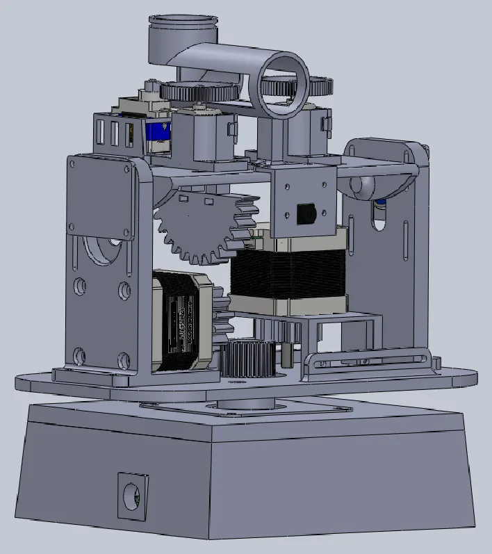
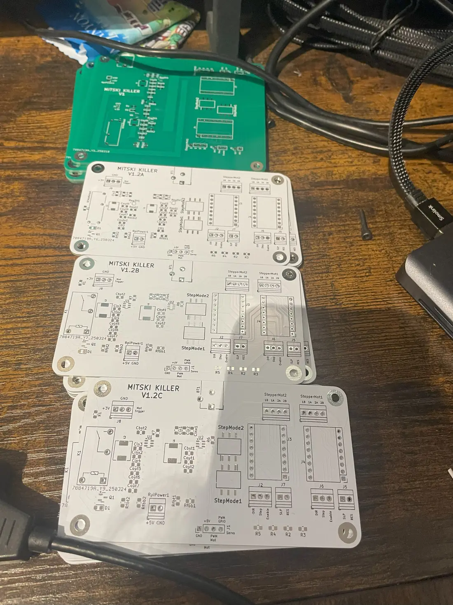
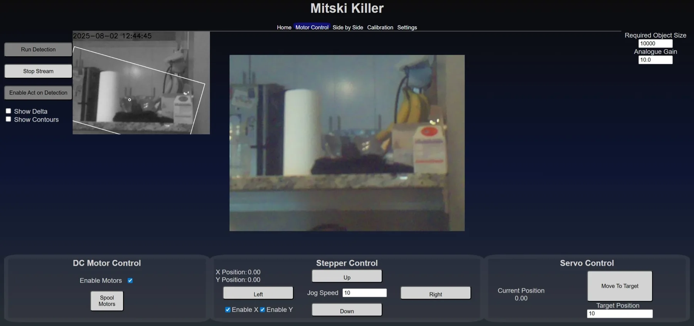
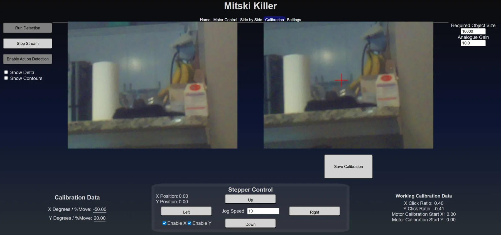
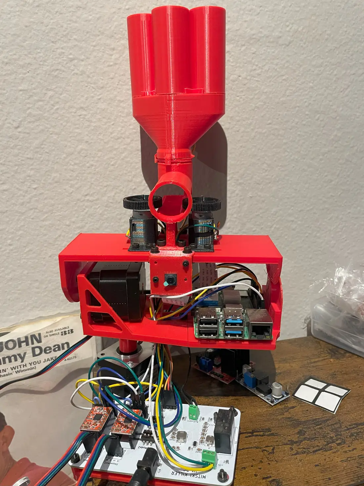

Camera to contour to stepper angle to trigger
A pan/tilt turret that watches a room, finds whatever moved, aims at it, and fires a foam ball. The target is an entitled, panther-looking black cat named Mitski. The actual problem is getting from pixels to motor angles quickly enough to hit a moving cat, and reliably enough that the thing doesn't fire at shadows. I started it in 2023 on an ESP32, hit the limits of what that chip could do, and shelved it. I picked it back up in 2025 on a Raspberry Pi with an architecture that could actually hold the whole feature set. The current version covers image processing, motion control, a Flask control server, four CAD revisions of the mechanism, and a custom PCB. I wrote all of it myself, with no AI-generated code.


The first build, in 2023, was an ESP32 system (Cam_Tracking_ESP) that I deliberately kept cheap, with as few external libraries as I could manage. That was the whole point at the time. I wanted to understand each layer instead of importing it. What stopped it was capability rather than effort. The ESP32 couldn't drive the kind of control interface I wanted, and it couldn't hold the control loop speeds that aiming and firing needed while processing frames at the same time.
Coming back to it in 2025 on a Raspberry Pi 4B meant giving up some of that and accepting prebuilt architecture, but it bought enough headroom for everything that followed. The Pi hosts the control GUI, runs the camera, processes frames, and drives the motors in one process.
Every hardware dependency sits behind an interface, picked at startup by
a factory that reads config. Set mock on the camera or the
GPIO layer and the system swaps in a stand-in that returns synthetic
frames and swallows pin writes.


None of the software matters if the thing underneath it can't hold an angle, which is where most of the revisions came from.

It detects, aims, and fires. What I'm still working on is accuracy, hitting targets while they're moving, tidying up the wiring, improving the mechanical drive, and the finishing touches that take it from a working system to a finished one. Documentation is uneven in places, since this started as something I was building for myself rather than for anyone else to read.